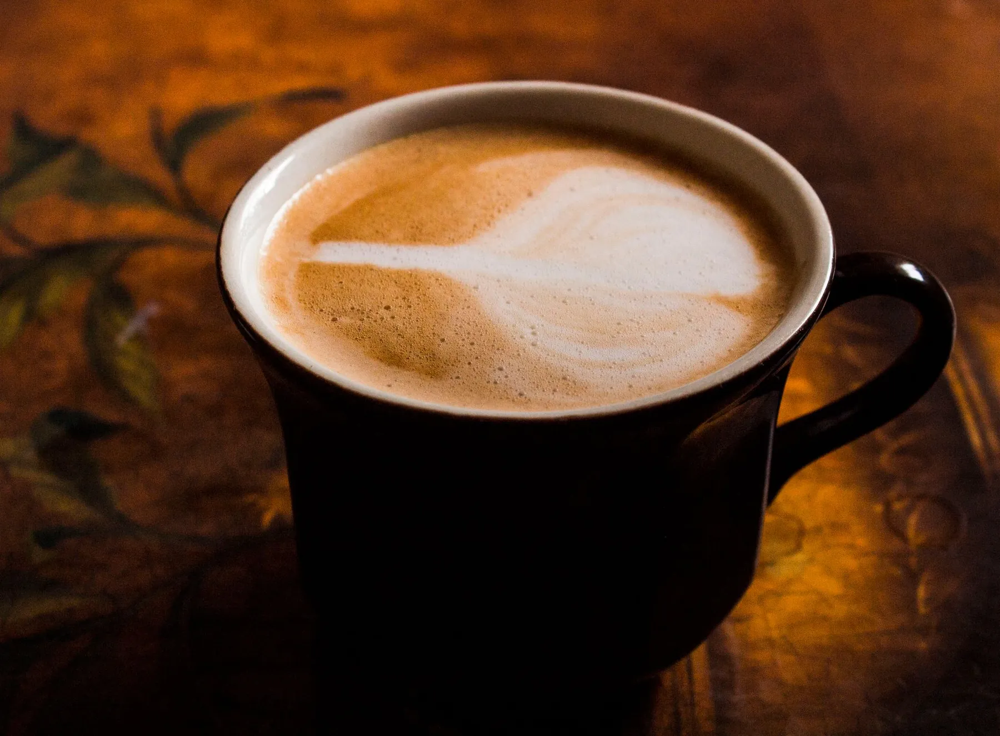
Sabahtan geceye,bir fincan.
Monaco Coffee & Bakery, günlük 08.00-00.00 açık. Gün boyu akışına kaydırarak bakın, etkinlik talebinizi Instagram'a hazır yazdırın.
Monaco'da gün bir fincanla başlar, fırından çıkanla devam eder ve gece yarısına kadar sürer.
İlk fincan, kapı açılırken.
Gün 08.00'de başlar. Bu bölümde sabahınızın hikâyesini yazarız: ne sunduğunuzu, misafiri nasıl karşıladığınızı. Bilgiyi sizden alırız.
Fırın vakti.
Monaco aynı zamanda bir bakery: vitrin, tezgâh ve tepsiler burada kendi fotoğraflarınızla durur. Ürün ve fiyat yazmadık; yalnız başlıkları hazırladık.
00.00'a kadar, gece de açık.
Akşam buluşması, geç saate kadar ders çalışmak ya da küçük bir kutlama: günlük 00.00'a kadar açık olduğunuz bilgisi sayfanın ilk söylediği şeydir.
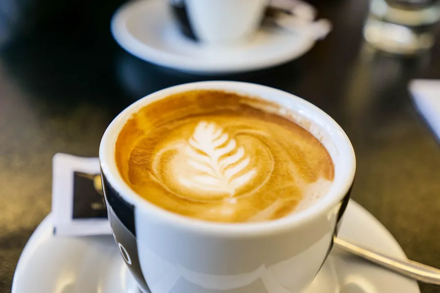
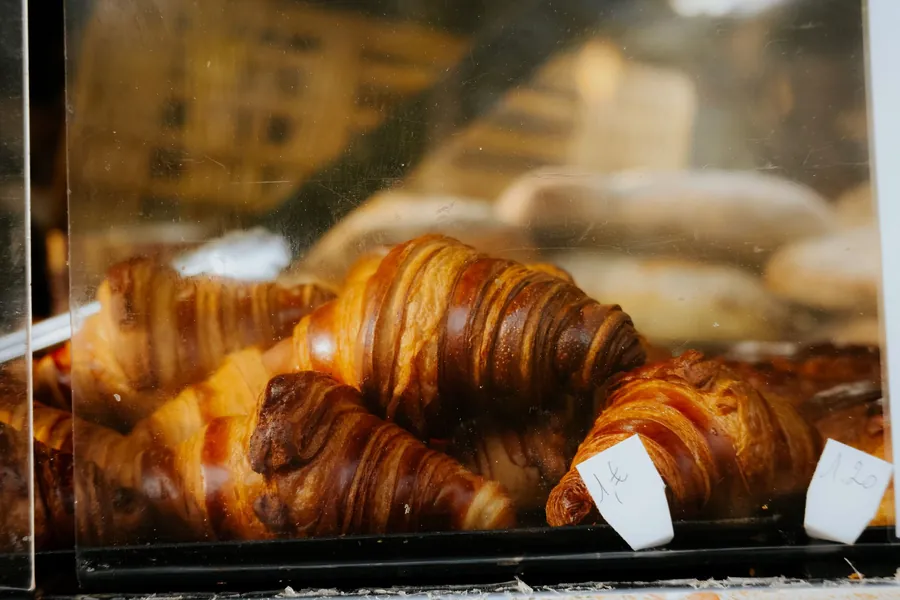
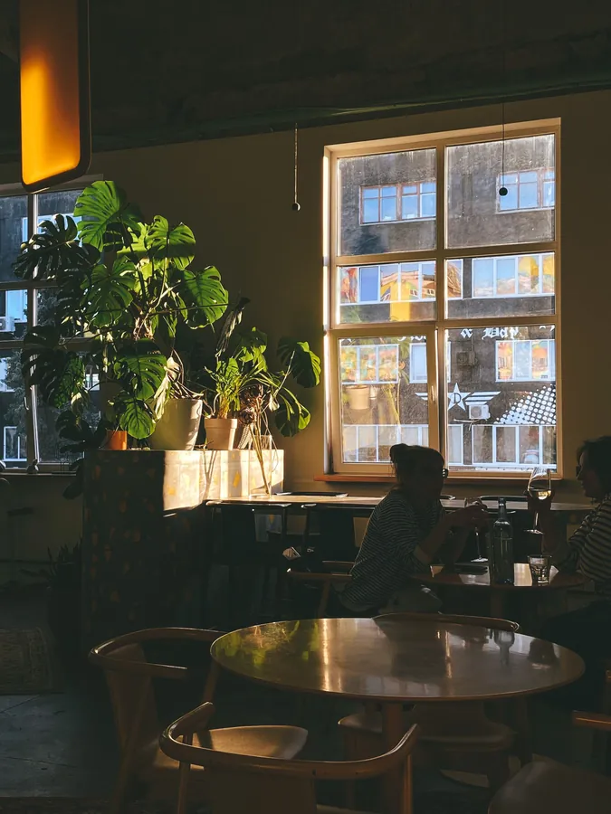
Fotoğraflar temsilîdir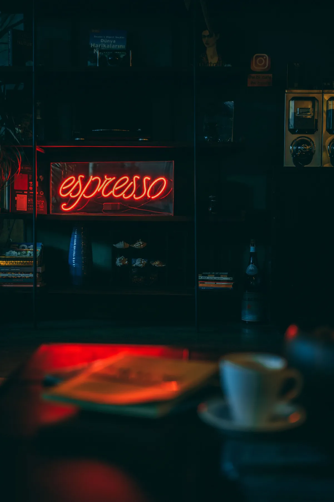
Özel gününüz, Monaco'da.
Doğum günü, mezuniyet ya da küçük bir buluşma: tarihi, saati ve kişi sayısını seçin, Instagram mesajı hazır yazılsın. Rezervasyonu Monaco onaylar.
Etkinlik talebi yaz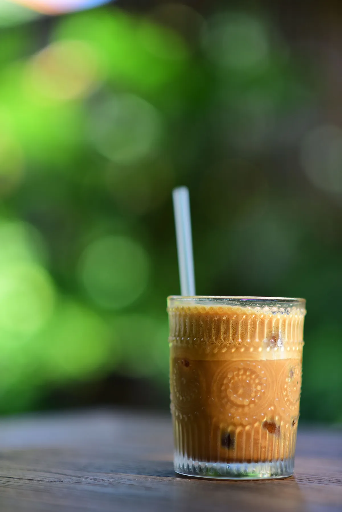
Kategori kategori, içecekler.
Instagram'daki DRINKS başlığınızı burada kategorilere ayırırız. Ürün adı ve fiyat uydurmuyoruz; listeyi sizden alıp ekleriz.
Kategorilere bak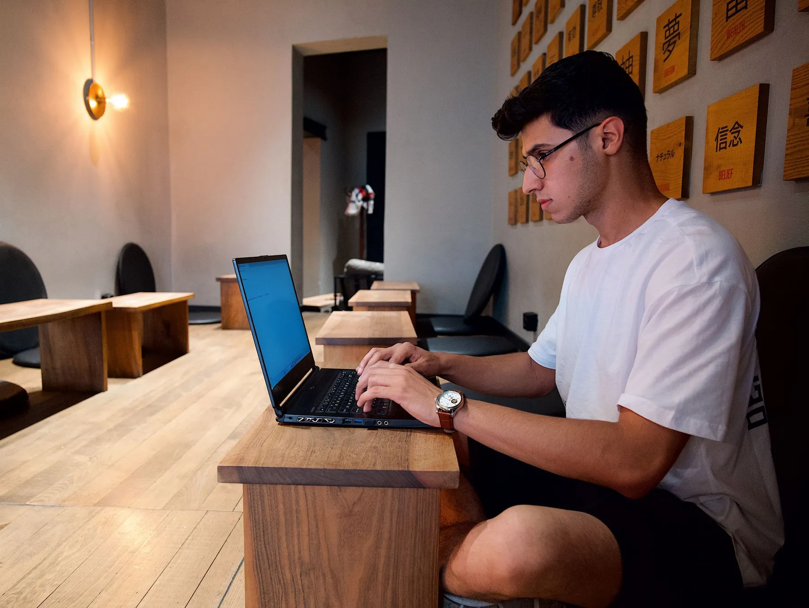
Gece yarısına kadar bir masa.
Kınıklı çevresinde ders sonrası ya da akşam buluşması arayan biri için asıl bilgi saat. Wi-Fi, priz ve oturma düzeni gibi ayrıntıları siz söyleyince ekleriz; doğrulamadığımız hiçbir şeyi yazmayız.
Adres ve saat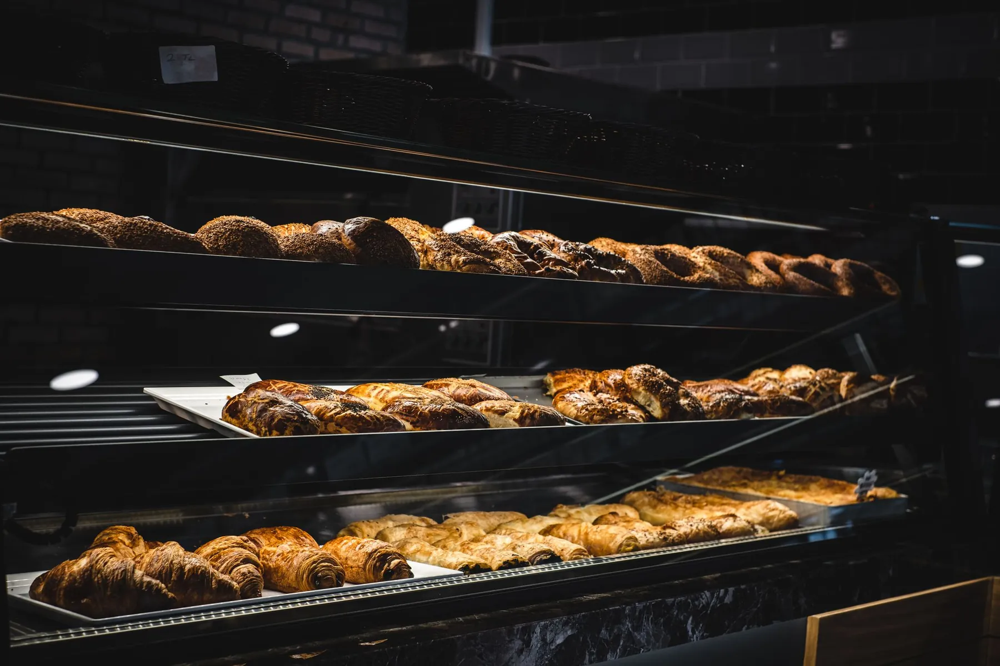
Vitrin, tepsi, tezgâh:
bakery tarafı.
Üç kategori.
Kahveler
Sıcak kahveler için başlık. Ürün listesi yayında sizden alınır.
Ürün adı — örnek · — ₺Soğuk içecekler
Buzlu kahveler ve soğuk içecekler için ayrı başlık.
Ürün adı — örnek · — ₺Fırın eşliği
İçeceğin yanına gelen fırın ürünleri için başlık.
Ürün adı — örnek · — ₺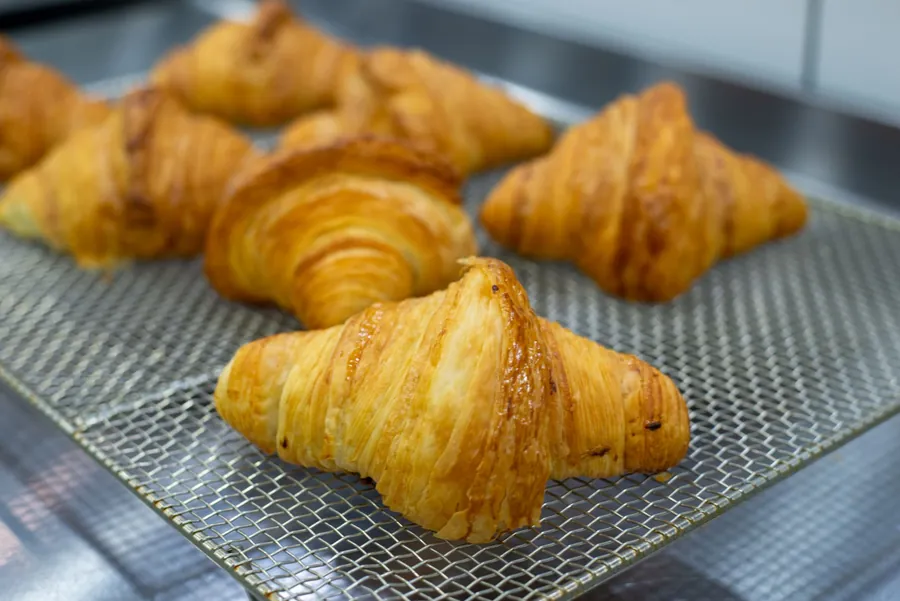
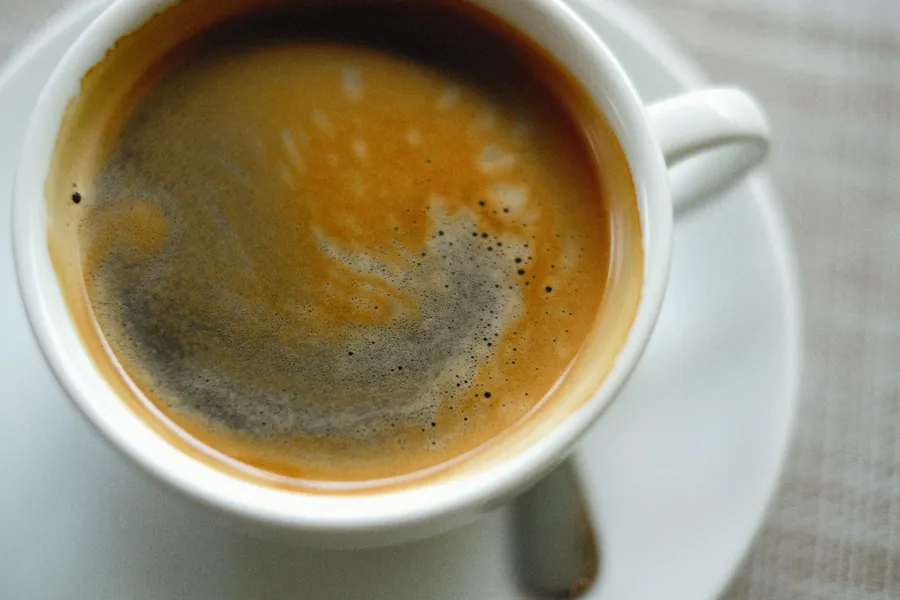
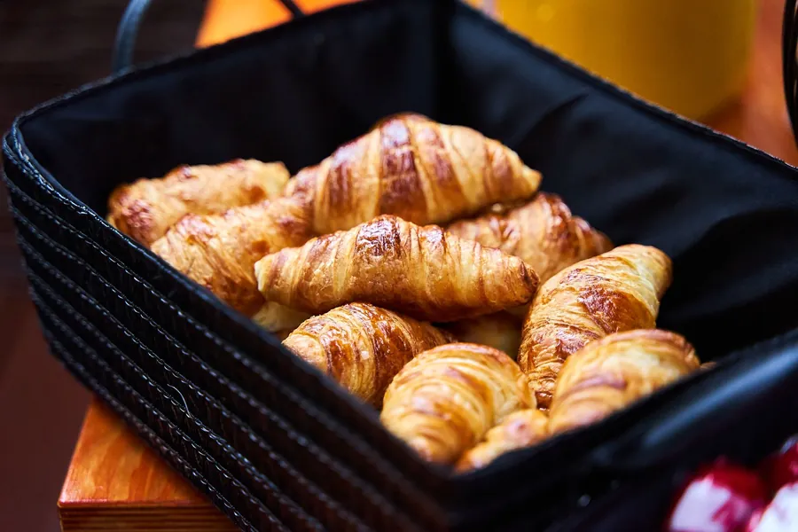
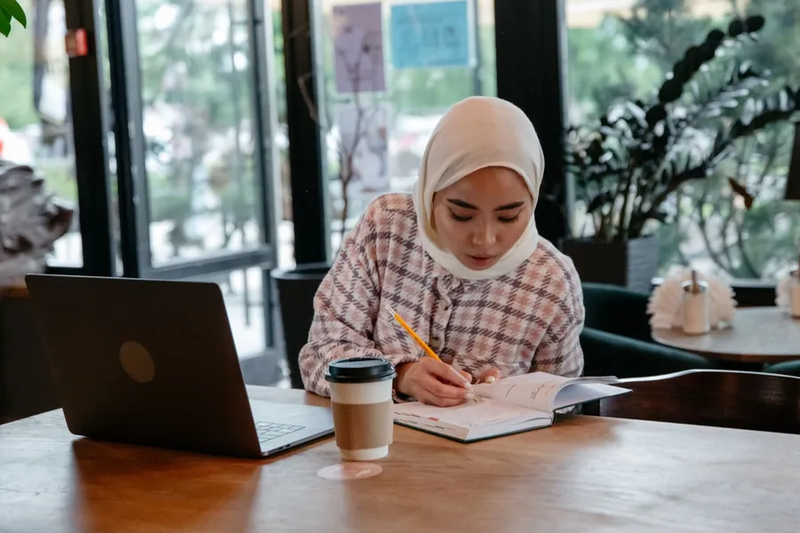
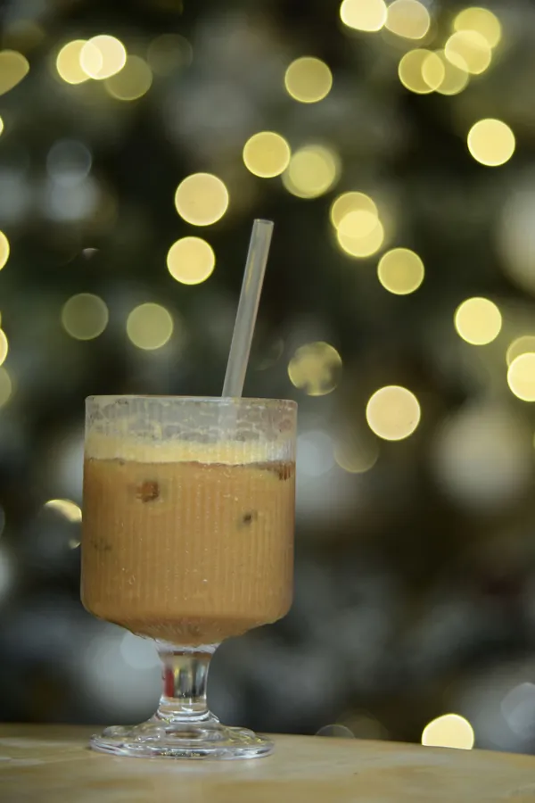
Seçin, mesaj yazılsın.
Hazır mesajı kopyalayıp Instagram'da gönderirsiniz. Bu form yer ayırmaz; tarih ve koşulları Monaco size yanıtlar.
Çamlık'ta, 6015. Sokak.
- Adres
- Çamlık, Kınıklı Mah. 6015 Sk. No:5, Pamukkale / Denizli
- Çalışma saatleri
- Günlük 08.00 - 00.00
Beğendiyseniz, söyleyin.
Sayfada uydurma puan ya da yorum göstermeyiz; memnun misafiri doğrudan Google sayfanıza yorum yazmaya yönlendiririz.